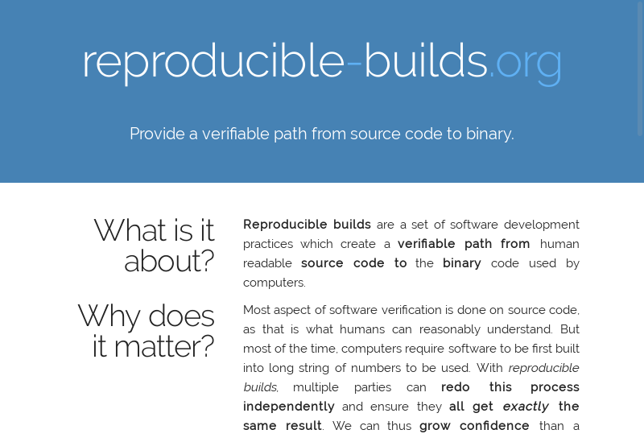

travis.debian.net, AptFsredis, python-django, …)#debian-devel-changes, X.Org, timeline.debian.net, …|
akira Alexis Bienvenüe Andrew Ayer Asheesh Laroia Ceridwen Chris Lamb Chris West Christoph Berg Daniel Kahn Gillmor Daniel Shahaf David Suarez Dhole Drew Fisher Esa Peuha Fabian Wolff |
Guillem Jover Hans-Christoph Steiner Helmut Grohne Holger Levsen HW42 Intrigeri Jelmer Vernooij josch Juan Picca Lunar Mathieu Bridon Mattia Rizzolo Nicolas Boulenguez Niels Thykier Niko Tyni |
Paul Wise Peter De Wachter Philip Rinn Reiner Herrmann Santiago Vila Sascha Steinbiss Satyam Zode Scarlett Clark Stefano Rivera Stéphane Glondu Steven Chamberlain Tom Fitzhenry Valerie Young Valentin Lorentz Wookey Ximin Luo |
media.ccc.de, 31C3
umask, environment variablestesting/amd64 → 90.1% reproducible
unstable/amd64 → 88.4% reproducible
#138409#787980#802241.buildinfo)dpkg, debhelper, sbuild, …
__DATE__ & __TIME__)
diffoscope (formerly debbindiff)disorderfsreproteststrip-nondeterminismSOURCE_DATE_EPOCH
testing, unstable, experimentalamd64, i386, armhfspectranaut)Hardware sponsored by
| 1st | 2nd | |
|---|---|---|
| hostname | jenkins |
i-capture-the-hostname |
| domainname | debian.net |
i-capture-the-domainname |
env TZ |
GMT+12 |
GMT-14 |
env LANG |
C |
fr_CH.UTF-8 |
env LC_ALL |
(not set) | fr_CH.UTF-8 |
env USER |
pbuilder1 |
pbuilder2 |
| uid/gid | 1111 |
2222 |
| shell | dash |
bash |
| UTS namespace | shared w/host | /usr/bin/unshare --uts |
| 1st | 2nd | |
|---|---|---|
| kernel | Linux 3.16 or 4.x (armhf WIP) |
|
| 32/64-bit kernel | i386 only |
|
umask |
0022 |
0002 |
| CPU type | Intel and AMD variation for i386/amd64 (WIP) |
|
| filesystem |
tmpfs / ext3 / ext4 / disorderfs (WIP)
|
|
| Day | 398 days variation (i386/amd64) |
|
SOURCE_DATE_EPOCH)#debian-reproducible on irc.oftc.net
C2FE 4BD2 71C1 39B8 6C53 3E46 1E95 3E27 D431 1E58